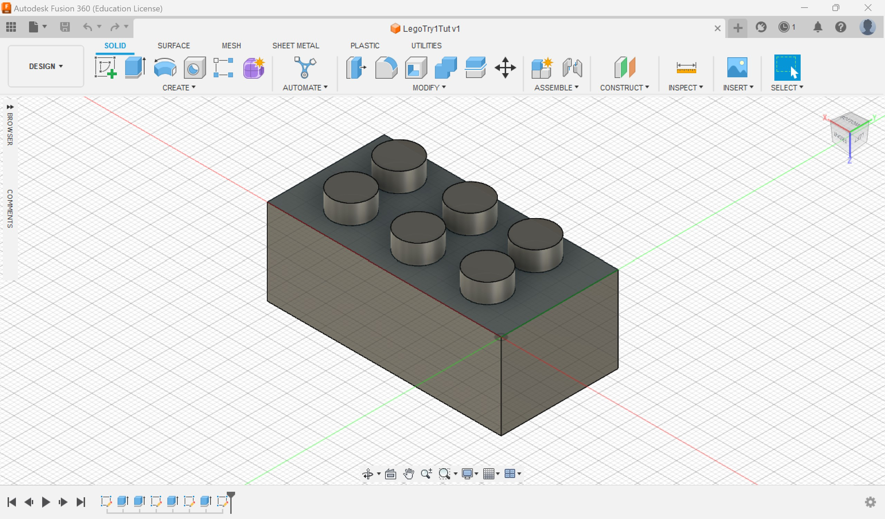

The first exercise is to create a nametag. The base was heart-shaped and the key-hold was added to the top corner. I decided to have the letter 'A' instead of my name to create a small nametag. By extruding the base followed by the sides and the letter, created a 3D nametag.
Mug
The next was to design a mug. First, I created a base which is a heart. Then, I extruded the sides to create the mug. For the handle, I added it to the side of the mug.
Lego Brick

I created a rectangular base then extruded the sides, forming a 3D open rectangle. Next I added the 6 circular extrusion on the top. 2 vertical borders were added beneath the base in the open rectangle.
Pyramid
I created a 20mm by 20mm square base, extruded the base to 4mm thickness and the sides up to 20mm height. I replicated it for every layer of the pyramid to creaete 4 layers total, resulting in the pyramid.
Hex Nut
The final exercise is a hex nut. First, I created a hexagon base, extruded it and fillet the corners. Next, I cut out a hole through the middle point with sides that replicated screws and fillet the sides of the hole too.